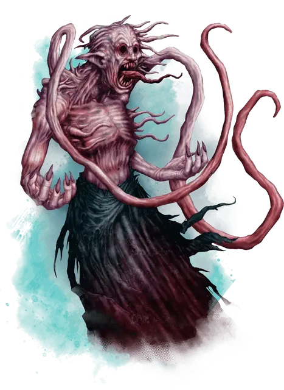

Долгаунт
Dolgaunt
Средняя Аберрация, законно-злая

Класс Доспеха 16 (Защита без доспехов)
Хиты 33 (6к8 + 6)
Скорость 40 футов
| мод | спас | ||
|---|---|---|---|
| СИЛ | 14 | +2 | +2 |
| ЛОВ | 18 | +4 | +4 |
| ТЕЛ | 12 | +1 | +1 |
| мод | спас | ||
|---|---|---|---|
| ИНТ | 13 | +1 | +1 |
| МДР | 14 | +2 | +2 |
| ХАР | 11 | +0 | +0 |
Навыки Акробатика +6, Восприятие +4, Скрытность +6
Иммунитет к состояниям ослепление
Чувства слепое зрение 120 футов (слеп за его пределами), пассивное Восприятие 14
Языки Глубинная речь, Гоблинский
Опасность 3 (700 опыта)
Бонус мастерства +2
Особенности
Уклонение. Если долгаунт должен пройти спасбросок Ловкости и в случае успеха должен получить половину, то он в случае успеха не получает никакого урона, а в случае неудачи получает только половину. Однако долгаунт не может использовать эту особенность, если он недееспособен.
Защита без доспехов. Пока долгаунт не носит ни доспехи, ни щит, к КД прибавляется его модификатор Мудрости.
Действия
Мультиатака. Долгаунт совершает две атаки щупальцами и два безоружных удара. До двух атак щупальцами можно заменить на высасывание жизни.
Щупальца. Рукопашная атака оружием: +6 к попаданию, досягаемость 15 футов, одна цель. Попадание: 7 (1к6+4) дробящего урона. Если существо Большого размера или меньше, то цель становится схваченной (Сл высвобождения 12). Пока захват не окончится, долгаунт не может использовать своё щупальце для других целей. Долгаунт имеет два щупальца.
Безоружный удар. Рукопашная атака оружием: +6 к попаданию, досягаемость 5 футов, одна цель. Попадание: 6 (1к4 +4) дробящего урона.
Высасывание жизни. Одно существо, схваченное щупальцем долгаунта должно преуспеть в спасброске Телосложения Сл 11. В случае провала цель получает 9 (2к8) урона некротической энергией, а долгаунт восстанавливает себе количество хитов, равное половине нанесённого урона некротической энергией.
Описание
Долгаунты — это истощенные хобгоблины с болезненно окрашенной плотью. Их глазницы открыты и пусты, а во рту извивается червообразный язык. Извивающиеся реснички покрывают их тела, реснички по длиннее окружают их головы. Так же долгаунты имеют два жилистых щупальца, растущими из плеч. Долгаунт слеп, но воспринимает окружающее через чувствительные реснички, покрывающие его кожу. Также он может поглощать жизнь , используя свои щупальца, с помощью которых он высасывает жизненную силу из любого существа, к которому прикасается.
Искаженные хаосом. Когда даэлькиры вышли из Ксориата с целью завоевать Кхорвайр, они захватили и преобразовали местных жителей этой земли, чтобы создать армии отвратительных воинов. Диррн Осквернитель создал долгаунтов из хобгоблинов, превратив их в умных, хладнокровных и эффективных убийц.
Когда даэлькиры потерпели поражение, долгаунты спустились в глубины Хайбера вместе со своими хозяевами. Там они учились в пещерных монастырях, превращая свои тела в оружие, предназначенное для выполнения поручений, данных им мастерами. Долгаунты часто бывают командующими отрядами долгримов, а также могут работать с культами Дракона Глубин, особенно с теми, которые посвящены Диррну Осквернителю.